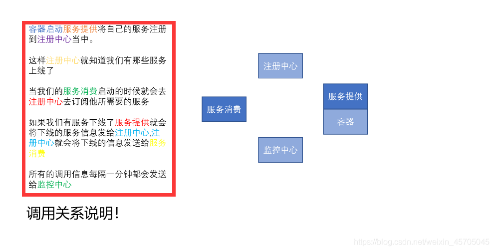

这篇文章转载自我在 CSDN 上的总结《Dubbo 学习笔记》。
# 分布式简要说明
Dubbo 是用于分布式系统的框架所以我们要先了解什么是分布式
分布式系统是若干独立 计算机的集合，这些计算机对于用户来说就像单个相关系统。
老式系统 (单一应用架构) 就是把一个系统，统一放到一个服务器当中然后每一个服务器上放一个系统，如果说要更新代码的话，每一个服务器上的系统都要重新去部署十分的麻烦。
而分布式系统就是将一个完整的系统拆分成多个不同的服务，然后在将每一个服务单独的放到一个服务器当中。(三个臭皮匠赛过诸葛亮)
# 应用架构的发展演变
ORM
单一应用架构：一个项目装到一个服务器当中，也可以运行多个服务器每一个服务器当中都装一个项目。
缺点：1. 如果要添加某一个功能的话就要把一个项目重新打包，在分别部署到每一个服务器当中去。2. 如果后期项目越来越大的话单台服务器跑一个项目压力会很大的。会不利于维护，开发和程序的性能。
MVC
垂直应用架构：将应用切割成几个互不相干的小应用，在将每个小应用独立放到一个服务器上，如果哪一个应用的访问数量多就多加几台服务器。
RPC
分布式应用架构 (远程过程调用)：当垂直应用越来越多，应用之间交互不可避免，将核心业务抽取出来，作为独立的服务，逐渐形成稳定的服务中心，使前端应用能更快速的响应多变的市场需求。
SOA
流动计算架构：在分布式应用架构的基础上增加了一个调度、治理中心基于访问压力实时管理集群容量、提高集群的利用率，用于提高机器利用率的 资源调度和治理中心 (SOA) 是关键 (不浪费计算机资源)

# Dubbo
官网:http://dubbo.apache.org/en-us/index.html
前面说过分布式系统是将一个系统拆分为多个不同的服务，那么对于一个像淘宝或者京东一样的大型系统能拆分出很多个服务来，这些服务我们该如何进行管理和调用呢！
# 设计架构
这个是 apache 官网上对 Duboo 设计架构的一张说明图，对于我一个初学者来说我可能看了没有什么感觉！
然后我又对于这张图进行了个人化的理解和说明(｀・ω・´) 请谨慎参考哦！

服务提供者（Provider）：暴露服务的服务提供方，服务提供者在启动时，向注册中心注册自己提供的服务。
服务消费者（Consumer）: 调用远程服务的服务消费方，服务消费者在启动时，向注册中心订阅自己所需的服务，服务消费者，从提供者地址列表中，基于软负载均衡算法，选一台提供者进行调用，如果调用失败，再选另一台调用。
注册中心（Registry）：注册中心返回服务提供者地址列表给消费者，如果有变更，注册中心将基于长连接推送变更数据给消费者
监控中心（Monitor）：服务消费者和提供者，在内存中累计调用次数和调用时间，定时每分钟发送一次统计数据到监控中心
# 工程架构
我在学习的过程中看到的用于 Dubbo 的工程架构图 (｀・ω・´)
gmall-interface (公共接口层)
gmall-user：用户模块（对用户接口的实现）作为服务提供者
gmall-order-web：订单模块（调用用户模块）作为服务消费者
# 配置文件
对服务提供者的文件配置
1、引入 dubbo
<!-- 引入dubbo --> | |
<dependency> | |
<groupId>com.alibaba</groupId> | |
<artifactId>dubbo</artifactId> | |
<version>2.6.2</version> | |
</dependency> | |
<!-- 由于我们使用zookeeper作为注册中心，所以需要操作zookeeper | |
dubbo 2.6以前的版本引入zkclient操作zookeeper | |
dubbo 2.6及以后的版本引入curator操作zookeeper | |
下面两个zk客户端根据dubbo版本2选1即可--> | |
<dependency> | |
<groupId>com.101tec</groupId> | |
<artifactId>zkclient</artifactId> | |
<version>0.10</version> | |
</dependency> | |
<!-- curator-framework --> | |
<dependency> | |
<groupId>org.apache.curator</groupId> | |
<artifactId>curator-framework</artifactId> | |
<version>2.12.0</version> | |
</dependency> |
2、配置提供者
<!--当前应用的名字 --> | |
<dubbo:application name="gmall-user"></dubbo:application> | |
<!--指定注册中心的地址 --> | |
<dubbo:registry address="zookeeper://118.24.44.169:2181" /> | |
<!--使用dubbo协议，将服务暴露在20880端口 --> | |
<dubbo:protocol name="dubbo" port="20880" /> | |
<!-- 指定需要暴露的服务 --> | |
<dubbo:service interface="com.atguigu.gmall.service.UserService" ref="userServiceImpl" /> |
对服务消费者的文件配置
1、引入 dubbo
<!-- 引入dubbo --> | |
<dependency> | |
<groupId>com.alibaba</groupId> | |
<artifactId>dubbo</artifactId> | |
<version>2.6.2</version> | |
</dependency> | |
<!-- 由于我们使用zookeeper作为注册中心，所以需要引入zkclient和curator操作zookeeper --> | |
<dependency> | |
<groupId>com.101tec</groupId> | |
<artifactId>zkclient</artifactId> | |
<version>0.10</version> | |
</dependency> | |
<!-- curator-framework --> | |
<dependency> | |
<groupId>org.apache.curator</groupId> | |
<artifactId>curator-framework</artifactId> | |
<version>2.12.0</version> | |
</dependency> |
2、配置消费者信息
<!-- 应用名 --> | |
<dubbo:application name="gmall-order-web"></dubbo:application> | |
<!-- 指定注册中心地址 --> | |
<dubbo:registry address="zookeeper://118.24.44.169:2181" /> | |
<!-- 生成远程服务代理，可以和本地bean一样使用demoService --> | |
<dubbo:reference id="userService" interface="com.atguigu.gmall.service.UserService"></dubbo:reference> |
# 高可用
1.zookeeper 宕机与 Dubbo 直连
现象:zookeeper 注册中心宕机，还可以消费 Dubbo 暴露的服务。
原因：健壮性
1.监控中心宕掉不影响使用，只是丢失部分采样数据 |
2.数据库宕掉后，注册中心仍能通过缓存提供服务列表查询，但不能注册新服务 |
3.注册中心对等集群，任意一台宕掉后，将自动切换到另一台 |
4.注册中心全部宕掉后，服务提供者和服务消费者仍能通过本地缓存通讯 |
5.服务提供者无状态，任意一台宕掉后，不影响使用 |
6.服务提供者无状态，任意一台宕掉后，不影响使用 |